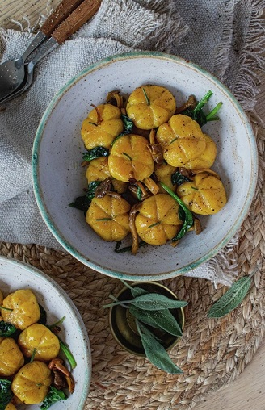

Gresskar Gnocchi
40-60min - Middels
Når gresskaret er i sesong er det perfekt å lage søte, små gresskargnocchi! Her spiser du først og fremst med øynene, men det er jammen ikke feil at de myke pasta putene av potet har en deilig smak av gresskar, og serveres sammen med spinat, sopp og nøttebrunt salviesmør.
Ingredienser:
- 250 g potet
- 250 g gresskarpuré
- 1 stk. eggeplomme
- 2 ss revet parmesan
- 75 g hvetemel, gjerne tipo 00 eller durumhvete
- 0,5 ts salt
- 0,25 ts pepper
- 0,25 klype revet muskatnøtt
- 2 ss smør til steking
- 1 pk babyspinat (á 65 g)
- 2 dl sopp, gjerne kantarell eller traktkantarell
- 6 blader frisk salvie
- 4 stilker frisk rosmarin til pynt (kan sløyfes)
Oppskrift:
- Skrell potet og kok dem i en kjele med usaltet vann til de er møre. Hell av vannet og sett kjelen tilbake på platen. Damp potetetene til det meste av fuktigheten er borte. Avkjøl litt.
- Riv potetene på den fineste siden av et rivejern, slik at du får en finkornet masse.
- Ha revet potet i en bolle sammen med gresskarpuré, eggeplomme og parmesan.
- Ha i mel, salt, pepper og muskat, og bland alt sammen med hendene. Det kan lønne seg å ta i melet litt etter litt til du får en smidig deig. Konsistensen på deigen kan avhenge av hvor mye du har dampet potetene eller hvor tynn/tykk gresskarpuréen din er.
- Del deigen i mindre biter og rull ut til lange, tynne pølser. Dryss over mel ved behov.
- Del pølsa i mindre biter og trill bitene til små, runde kuler.
- Bruk en kjøkkenhyssing, og press lett ned 3 ganger per kule, slik at du får mønsteret av et gresskar.
- Kok gnocchiene i en kjele med lettsaltet vann til de flyter opp. Løft dem ut med en hullsleiv.
- Ha smør i en varm stekepanne og la det bli nøttebrunt før du har i de kokte gnocchiene.
- Fres gnocchien sammen med spinat, sopp og salvieblader. Krydre med salt og pepper.
- Anrett gresskar gnocchiene i dype skåler, og stikk gjerne inn et lite rosmarinblad på hvert lite gresskar for morro skyld.

| Næringsinnhold per 100 gram | |
|---|---|
| Energi: | 1450 kj |
| Kalorier: | 351 kcal |
| Fett: | 27 g |
| Mettet fett: | 17 g |
| Karbohydrater: | 0 g |
| Sukkerarter: | 0 g |
| Protein: | 27 g |
| Salt: | 1,1 g |